Mission 04: Add Event Triggers to act autonomously¶
Warning
This course is still in development. That means that the quality is not up to par yet or that it doesn't work as intended.
🕵️♂️ CODENAME: OPERATION SIGNAL POINT¶
⏱️ Operation Time Window:
~45 minutes
🎯 Mission Brief¶
Welcome back, Agent. In Mission 03 - you learned how to build an Application Intake child agent and an Interview Prep connected agent to broaden your main Hiring Agent's capabilities.
Your assignment, should you choose to accept it, is Operation Signal Point - diving deeper into event triggers - elevating your agent system from reactive to autonomous operation. You'll transform your agents from waiting for human input to proactively responding to external events and taking intelligent action without supervision.
Think of it as upgrading from agents that answer questions to agents that anticipate needs and act independently. Through event triggers and automated workflows, your Hiring Agent will detect incoming resume emails, process attachments automatically, store data in Dataverse, and notify your HR recruitment team via Microsoft Teams - all while you focus on higher-value tasks.
Welcome to the world where automation meets intelligence.
🔎 Objectives¶
In this mission, you'll learn:
- How event triggers enable autonomous agent behavior without user interaction
- The differences between interactive and autonomous agents in Copilot Studio
- How to create event triggers that automatically process email attachments and upload files to Dataverse
- How to build agent flows that post adaptive cards to Teams channels for notifications
- How to pass data between event triggers and agent flows for end-to-end automation
🤔 What is an Event trigger?¶
Previously in Recruit, we learned about event triggers. Let's do a quick recap on this in case you missed it.
Event triggers let an agent act on its own when something happens in another system - no user message required. When the configured event fires - such as “new SharePoint item,” “new email,” “Planner task assigned,” or even a time‑based recurrence, a connector sends a trigger payload to your agent. The agent then follows your instructions to decide which actions or topics to call.
Key characteristics¶
-
Autonomous activation:
- Unlike topic triggers that start when a user types to the agent, event triggers fire from external events, enabling proactive behavior.
-
Payload-driven:
- Each event delivers a payload (variables + optional instructions) through a connector. The agent uses your defined instructions and the payload to choose what to do next.
- For example, call a topic or execute actions defined by Tools.
-
Examples out-of-the-box:
- SharePoint/OneDrive file or item created
- Planner task completed/assigned
- Microsoft Forms response submitted
- Recurrence/schedule
Availability depends on your organization’s data policies configured in Power Automate.
-
Requires generative orchestration:
- Event triggers are available only when generative orchestration is enabled for the agent.
-
Billing/usage:
- Each trigger delivery counts as a message toward Copilot Studio capacity.
- For example a 10‑minute recurrence sends a message every 10 minutes.
-
Auth model and setup:
- You add triggers within the agent Overview, under Triggers. Authentication for the trigger connector uses the agent maker’s account (“agent author authentication”).
- You can edit trigger parameters and payload in the Power Automate maker portal.
-
Testing & observability:
- You can test triggers from the agent's test pane and inspect behavior with the activity map before publishing.
TL;DR for developers
Think of event triggers as webhook-like signals that push a structured payload into your agent, letting it initiate work and chain actions across systems - without waiting for a user to ask.
Topic triggers - how they differ¶
Previously you learned about topic triggers in Recruit, however you might still be wondering how Topic triggers differ from Event triggers, and why that distinction matters for understanding what makes an agent autonomous.
Topic triggers control when a topic runs, usually in response to a user message.
- In generative orchestration, the default trigger is By agent - the planner chooses a topic whose name/description best matches the user’s message.
- In classic orchestration, the default is Phrases - the planner chooses a topic when one or several trigger phrases best match the user's message.
Other trigger types include Message received, Event received, Activity received, Conversation update, Invoke received, On redirect, Inactivity, and Plan complete.
Core difference
Topic triggers are conversation activity starters inside the chat.
Event triggers are system event starters delivered via connectors that can run the agent without any conversation at all.
Quick guide of Topic trigger vs Event trigger¶
- Topic trigger: User (or chat activity) said/did X ➡️ run Topic T.
- Event trigger: SharePoint/Planner/Email/Timer fired with payload P ➡️ agent evaluates instructions ➡️ call Actions/Topics accordingly.
🏓 Interactive agent vs Autonomous agent - comparison¶
Now that you know the difference between event triggers and topics triggers, let's next learn about the difference between an interactive agent vs an autonomous agent.
In Copilot Studio terms, "interactive" maps to agents that primarily engage via topics in a chat or channel. "Autonomous" maps to agents that also leverage event triggers to run without user input.
The following table summarizes their differences and similarities.
| Dimension | Interactive agent | Autonomous agent |
|---|---|---|
| How it starts | User (or chat activity) triggers a topic. Example: By agent, Phrases, Message received. | External event trigger sends a payload via connector to the agent. Example: SharePoint, Planner, email, schedule, etc. |
| Primary use | Q&A, guided workflows, request-driven actions in chat - Teams, web, etc. | Proactive operations and background automation - react to system changes and then notify, file, or orchestrate tasks. |
| Trigger surface | Topic triggers: By agent / Phrases / Message received / Activity types / Invoke / Inactivity / Plan complete | Event triggers library via connectors; payload includes event data + optional instructions. |
| Planner (generative orchestration) | Strongly leveraged for By agent and Plan complete triggers to select/sequence topics. | Required for event triggers; the agent uses instructions + payload to decide which actions/topics to call. |
| Typical example | User asks "What's our refund policy?" → Topic runs, queries knowledge, response. | New Planner task assigned → Event trigger fires → Agent posts a Teams message, updates a record, or calls a topic. |
| Setup path | Create topics, define trigger type, author dialog/actions; publish to channels. | Add event trigger (Overview → Triggers), authenticate connector with agent author credentials, configure payload/instructions; test via test pane; publish. |
| Auth and governance | Runs under channel/auth context; topic triggers respond to chat activities in allowed channels. | Trigger availability depends on Power Automate data policies; connectors run under the agent maker’s account. |
| Observability | Test topics within Copilot Studio, inspect conversation transcripts/activities. | Use Test trigger and activity map to validate execution before publishing, monitor activity after publishing. |
| Capacity impact | Each user message/agent response is a message consuming capacity. | Each event delivery is also a message, plus any subsequent actions. Example: a 10‑minute recurrence = 6 messages/hour |
When to use which?¶
- Choose topic triggers (interactive) when users initiate the agent conversation - FAQ, guided intake, or command‑style tasks inside chat. The planner’s By agent trigger reduces manual phrase curation.
- Add event triggers (autonomous) when the agent should start the conversation or take action itself - on updates in SharePoint/Dataverse, incoming email, or on a schedule. This moves you from reactive to proactive operations.
Developer tips & gotchas¶
-
Enable generative orchestration for any agent you want to make autonomous. Event triggers won’t show up otherwise.
-
Model the payload early. Decide what minimal fields your agent needs from the trigger such as
itemId,assignedTo,dueDateand add concise instructions that tell the agent which action/topic to call based on payload values. -
Auth scope matters. Triggers authenticate using the agent maker’s account. Ensure that account has the right connector permissions and complies with Power Automate data policies.
-
Control cost and noise. High‑frequency recurrences or highly chatty sources can rack up message consumption quickly - throttle where possible or add conditions in the trigger to filter events.
-
Test before publishing. Use Test trigger and the activity map to watch the plan and called actions - iterate on instructions/payload until behavior is stable.
🧪 Lab 04 - Automating candidate application emails¶
We're next going to add an event trigger to the Hiring Agent and build an agent flow in the child Application Intake Agent to handle further processing for autonomy.
✨ Use case scenario¶
As an HR Recruiter
I want to be notified when an email with a resume arrives in my Inbox and is automatically uploaded to Dataverse
So that I can stay notified of resumes sent by email for applications automatically uploaded to Dataverse
We'll be achieving this using two techniques
-
An event trigger for when the email arrives,
- Check the
contentTypeof the file equalsPDFas the format type. - Extract the file and upload to Dataverse using actions through the Dataverse connector.
- Then send a prompt to the agent for further processing by passing input parameters from the Dataverse actions.
- Check the
-
An agent flow will be added to the child Application Intake Agent which is invoked by the prompt in the event trigger.
- Use the input parameters passed from the prompt of the event trigger in an adaptive card posted to a channel in Microsoft Teams to notify the HR Recruitment team. The adaptive card will have a link to the Dataverse row which can be viewed in the Hiring Agent.
Let's begin!
✨ Prerequisites to complete this mission¶
To complete this lab you will need to:
- Have completed Mission 01 and Mission 03 and have your Hiring Agent ready.
- You'll also need access to Microsoft Teams to complete the second lab exercise of posting an adaptive card to Microsoft Teams.
🧪 Lab 4.1 - Automate uploading resumes to Dataverse received by email¶
-
In the Hiring Agent, scroll down in the Overview tab to the Triggers and Channels section and select + Add.
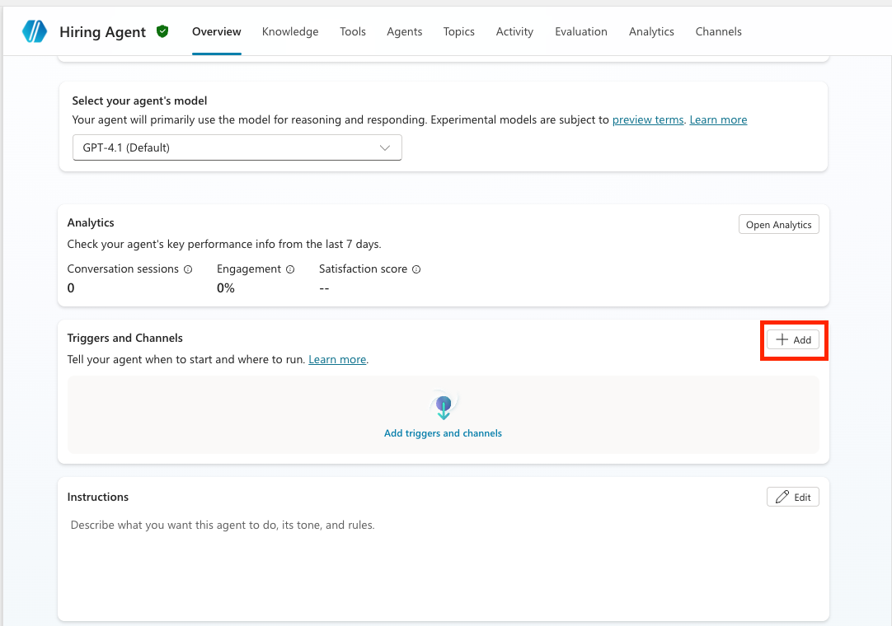
-
A list of triggers will appear. Select When a new email arrives (V3) and select Next.

-
We'll now see the Trigger name and the Sign in connection references for the apps listed. Rename the trigger name to the following:
NOTE: Make sure you see a green check by each of the connection references for the apps listed. If you don't see a green check, sign in through the ellipsis (...) and select + New connection reference to create a new connection reference.

-
The final step is to set the input properties of the trigger. Update the following properties to the following,
Property How to Set Details Include Attachments (Optional) Dropdown Yes Subject Filter (Optional) Type/Enter with keyboard Application Only with Attachments (Optional) Dropdown Yes Select Create trigger.

-
Once created, a confirmation message will appear that the trigger has been added to the agent. Select Close and the trigger will be listed in the Triggers section.
-
We're now going to update the event trigger to add some more automation capabilities. Select the ellipsis (...) by the trigger and select Edit in Power Automate.

-
The trigger will then load as a flow in the Power Automate maker portal. It will open to the flow designer where we can add further logic and actions for more automation. The trigger will appear at the top, followed by Sends a prompt to the specified copilot for processing as the last action in the flow.
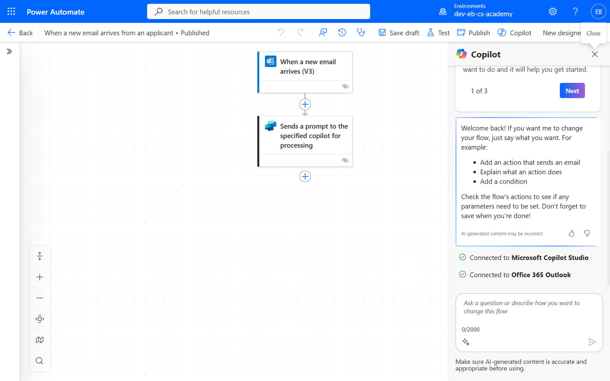
-
By default, the When a new email arrives trigger in Power Automate may process multiple emails together if several arrive at once, running the flow only once for the batch.
To ensure the flow runs separately for each email, enable the Split On setting in the trigger’s settings and select
@triggerOutputs()?['body/value']in the dropdown array field.With Split On turned on and the array field set to
@triggerOutputs()?['body/value'], the flow will run individually for each message, even if many arrive simultaneously.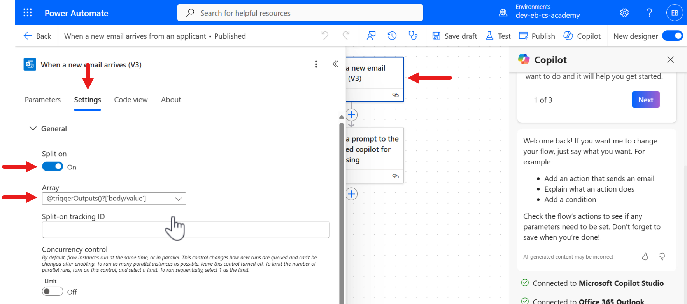
-
Let's next add some logic to check the file type of the attachment, we only want to upload .PDF file attachments and not images (these could come from email signatures). Select the + icon below the trigger and select Control under the Built in tools section.

-
Select the Condition action.

-
Now we configure the condition to check if the file attachment’s type is .PDF. In the Choose a value field on the left, select the lightning bolt icon.
-
In the Search field type the following,
```text content type ``` -
Then select the Attachments Content-Type parameter from the trigger.
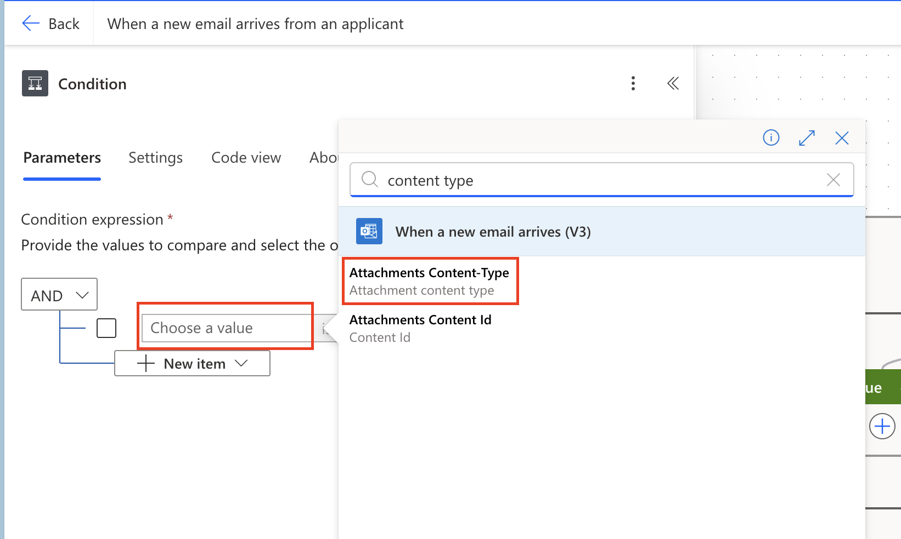
-
Let's pause here for a moment, you probably noticed that the For each action automatically appeared.
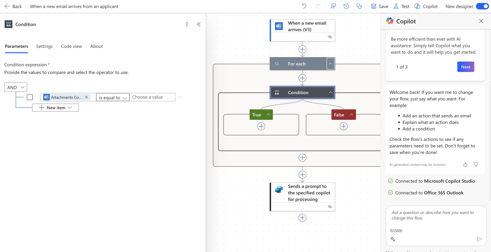
This action represents looping through each attachment in the email, since the Attachments Content-Type parameter is tied to each attachment.
Underneath the hood, it's an array and that's why the For each action was automatically added when we selected the Attachments Content-Type parameter in the Condition action.
To learn more about this, expand the following additional learning block.
Additional Learning: For each action automatically appearing
🤔 Why does "Apply to each" or "For each" Automatically Appear?
When you select a parameter (dynamic content) that represents a list or array of items - for example, a list of attachments, emails, or rows - Power Automate recognizes that you might want to process each item individually.
To help you do this, Power Automate automatically adds an “Apply to each” (or For each) loop around your action. This ensures that your action will run once for every item in the list, rather than trying to process the whole list at once (which could cause errors).
🦋 Example
- If you select "Attachments" from a previous action (which is an array), and try to use it in an action that expects a single file, Power Automate wraps your action in an "Apply to each" (or For each) loop.
- This way, your action will run for each attachment - one at a time.
💡 Key Points
- Automatic: The loop appears automatically to help you process each item in a collection.
- Prevents errors: Without the loop, your action might fail because it can't handle multiple items at once.
- Visual cue: It's a visual way to show that your flow will repeat the action for every item in the list.
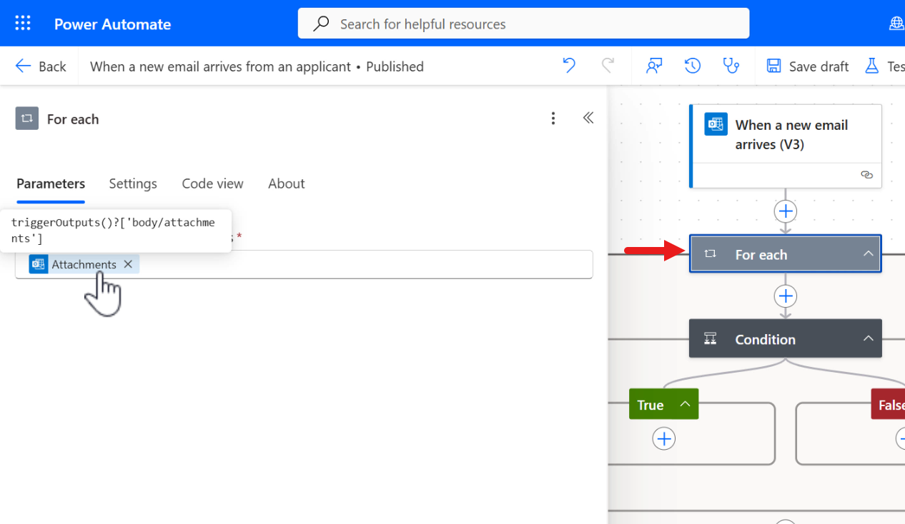
-
Next, in the other Choose a value field to the right in the Condition block, type the following,
This will ensure that for each file attachment, it will check the file extension format is .PDF.
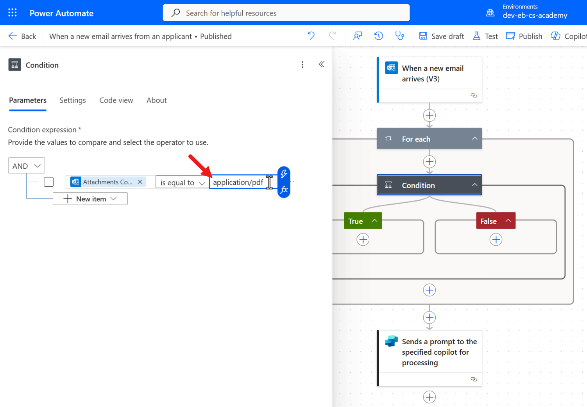
-
Now we'll configure the True path to extract the file from the email and upload it into the Resume Dataverse table.
Add a new action below in the True path and search for
html to text. Select the Html to text action.To learn more about the Html to text action, expand the following additional learning block.
Additional Learning: Html to text action
🤔 What is the "HTML to text" Action?
The HTML to text action in Power Automate is used to convert HTML-formatted content into plain text. This is especially useful when you receive data (like emails, web content, or API responses) that contains HTML tags, and you want to extract just the readable text without any formatting or code.
⚙️ How does it work?
- Input: You provide a string of HTML content (for example, the body of an email).
- Output: The action removes all HTML tags and returns only the plain text.
👍🏻 When should you use it?
- When you want to extract readable text from emails, web pages, or API responses that contain HTML.
- Before sending content to systems that don’t support HTML formatting (like SMS, Teams messages, or databases).
- To clean up data for further processing or analysis.
🔭 Where to find it?
- In Agent Flows, search for the action called
HTML to text. It's under the Data Operations connector.
💡 Key Points
- It removes all HTML tags and leaves only the text.
- It does not interpret or execute scripts/styles - just strips tags.
- Useful for data cleaning and preparing content for plain-text outputs.
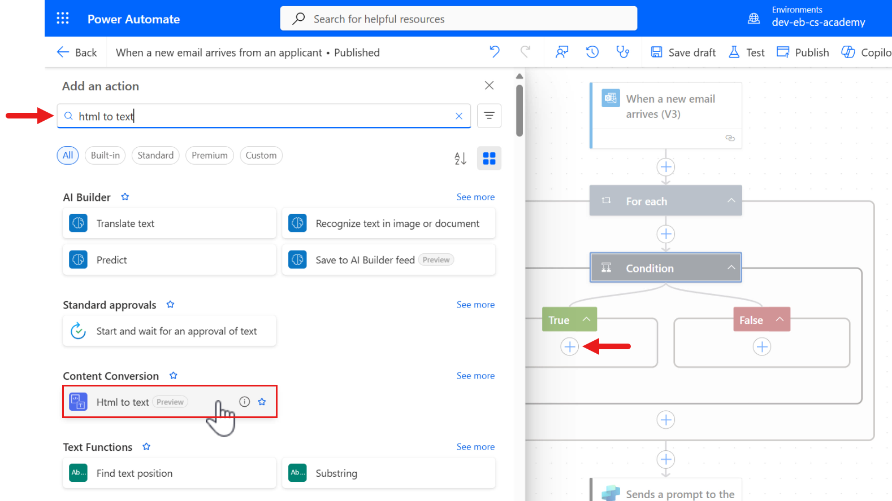
-
Next, we need to create a new connection reference for the Html to text action by selecting Create new.

-
The action can now be configured. Let's add the Body parameter from the trigger. In the Content field, select the lightning bolt icon or fx icon to the right.

-
In the Dynamic content tab, search for
bodyand select the Body parameter, followed by selecting Add.
-
We've completed configuring this action so let's exit from the action by selecting the two angle brackets («) pointing to the left to collapse the panel.
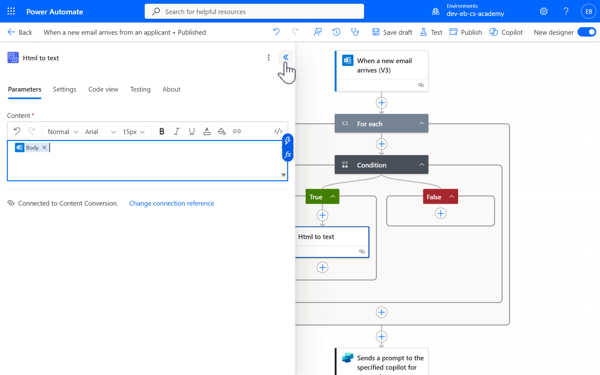
-
We'll add a new action by selecting the + icon underneath the Html to text action which will load the panel to add actions. Search for Dataverse add.Select the Add a new row action.

-
Rename the action by pasting the following as the name in the upper left hand corner of the properties panel,
For the Table name parameter, search for
resand select the Resumes table.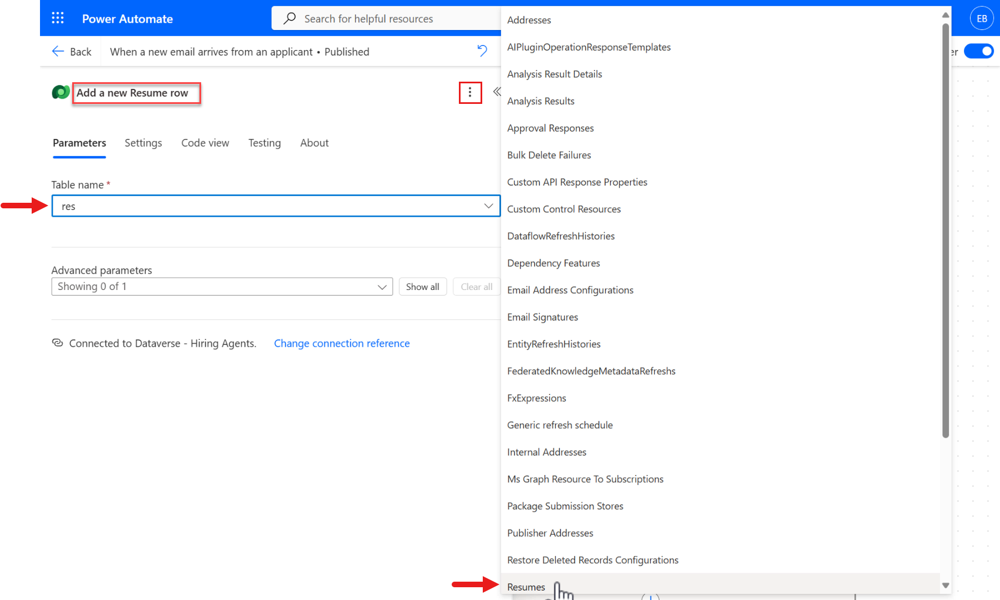
-
Select the Resume Title field next and select the fx icon to the right.
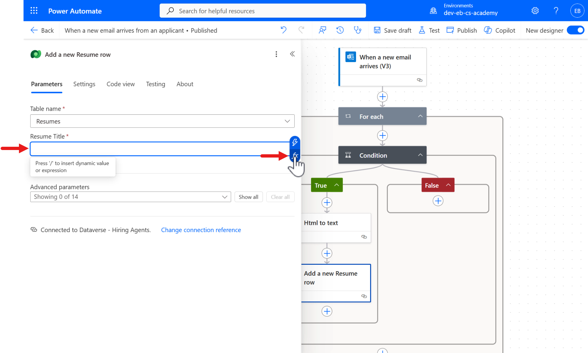
-
In the Function tab, enter the following expression that uses the
item()function.Select Add to add the expression to the Resume Title parameter.
To learn more about the
item ()function, expand the following additional learning block.Additional Learning:
item()function🤔 What is the
item()function?- When you use an Apply to each action, Power Automate goes through each element in a collection (array).
- It’s most often used inside actions like Apply to each (or For each), Select, or Filter array.
⚙️ How does it work?
item()is a function that returns the current item being processed in a loop or array operation.- Inside that loop,
item()refers to the current element being processed.
📌 Where do you use it?
- Apply to each: to access properties of the current item.
- Select: to transform each item in an array.
- Filter array: to reference the current item being evaluated.
🦋 Example
- Expression inside a loop:
item()?['Email']
- This gets the
Emailproperty of the current item.
💡 Key Points
item()is context-sensitive: it always refers to the current item in the loop or array operation you're in.- If you nest loops, you can use
items('LoopName')to refer to items in a specific loop.

-
We still need to configure several more parameters, select Show all and in the Cover Letter field, select the fx icon to the right.
In the Function tab, enter the following expression that uses the same expression in the previous mission.
if(greater(length(body('Html_to_text')), 2000), substring(body('Html_to_text'), 0, 2000), body('Html_to_text'))This expression checks if the text from the Html to text action is longer than 2000 characters, and if so, returns only the first 2000 characters; otherwise, it returns the full text.

-
The expression will now be added to the Cover Letter field.

-
For the Source Email Address field, select the lightning bolt icon and search for
fromand select the From parameter from the trigger as this contains the email address value.
-
For the Upload Date field, select the fx icon to the right. In the Function tab, enter the following expression that uses the
utcNow()function.To learn more about the
utcNowfunction, expand the following additional learning block.Additional Learning:
utcNowfunction🤔 What is the
utcNow()function?- The utcnow() function in Power Automate returns the current date and time in Coordinated Universal Time (UTC) in an ISO 8601 format, like:
2025-09-23T04:32:14Z
🦋 Example
- Expression:
concat('Report generated on ', utcnow())
- Output is:
- Report generated on
2025-09-23T04:32:14Z
- Report generated on
💡 Key Points
- No arguments (input parameters) required: it always gives the current UTC timestamp.
- Use cases
- Adding timestamps to logs or file names
- Comparing current time with other dates
- Scheduling or time-based conditions
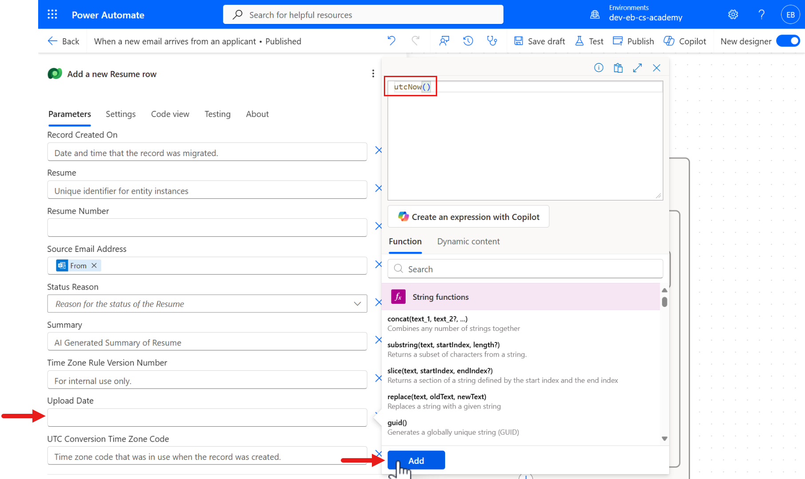
- The utcnow() function in Power Automate returns the current date and time in Coordinated Universal Time (UTC) in an ISO 8601 format, like:
-
We've now completed configuring the Add a new Resume row action so let's exit from the panel by collapsing it.
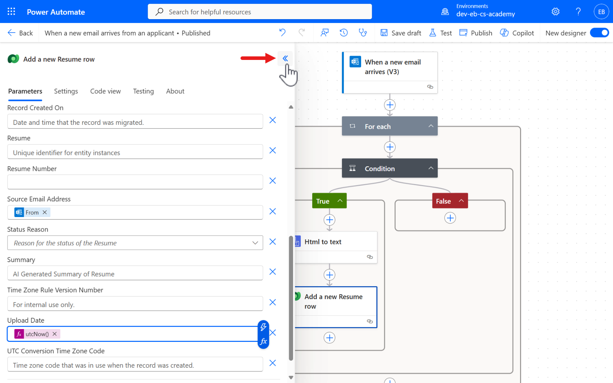
-
We'll add a new action by selecting the + icon underneath the Add a new Resume row action which will load the panel to add actions. Search for Dataverse Upload. Select the Upload a file or an image action.

-
Rename the action by pasting the following as the name,
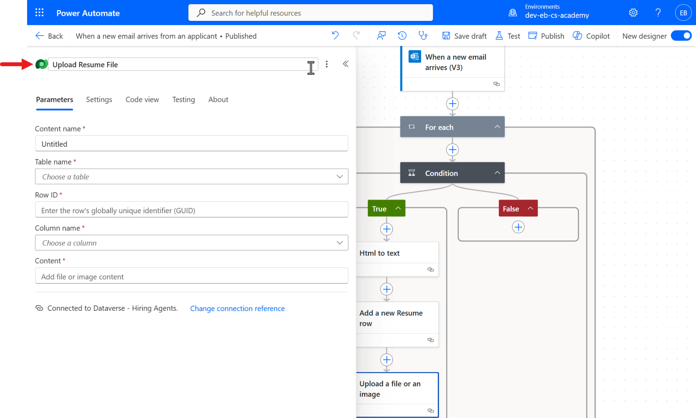
-
Select the Content name field next and select the fx icon to the right.
In the Function tab, enter the following expression that uses the
item ()function. This gets thenameproperty of the current item (the attachment file).
-
For the Table name parameter, search for
resumesand select the Resumes table.
-
Select the Row ID field next and select the lightning bolt icon to the right.
Search for
IDand select the Resume parameter from the Add a new row Dataverse action as this contains the ID value of the row to upload the PDF file to.Select Add.

-
Select the Column name field and select the Resume PDF option.

-
Select the Content field and select the fx icon to the right.
In the Function tab, enter the following expression that uses the
item ()function. This gets thecontentBytesproperty of the current item (the attachment file).contentBytesrefers to the raw binary data of a file or attachment, encoded as a Base64 string. -
We've completed configuring this action so let's exit from the action by selecting the two angle brackets («) pointing to the left to collapse the panel.
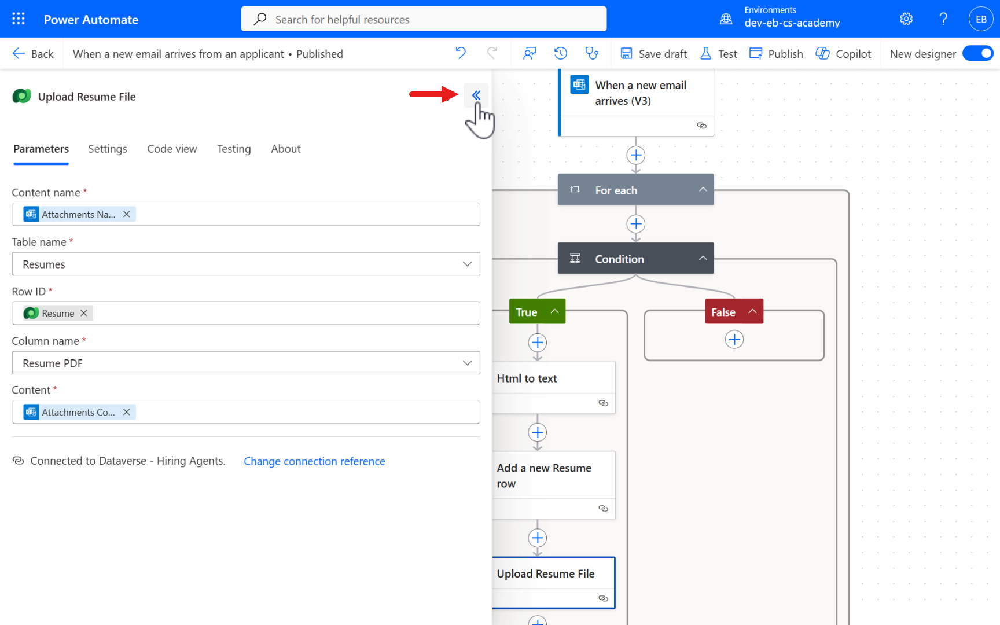
-
Next, select the Sends a prompt to the specified copilot for processing, then drag and drop this action to be below the Upload Resume File action in the True path of the condition.
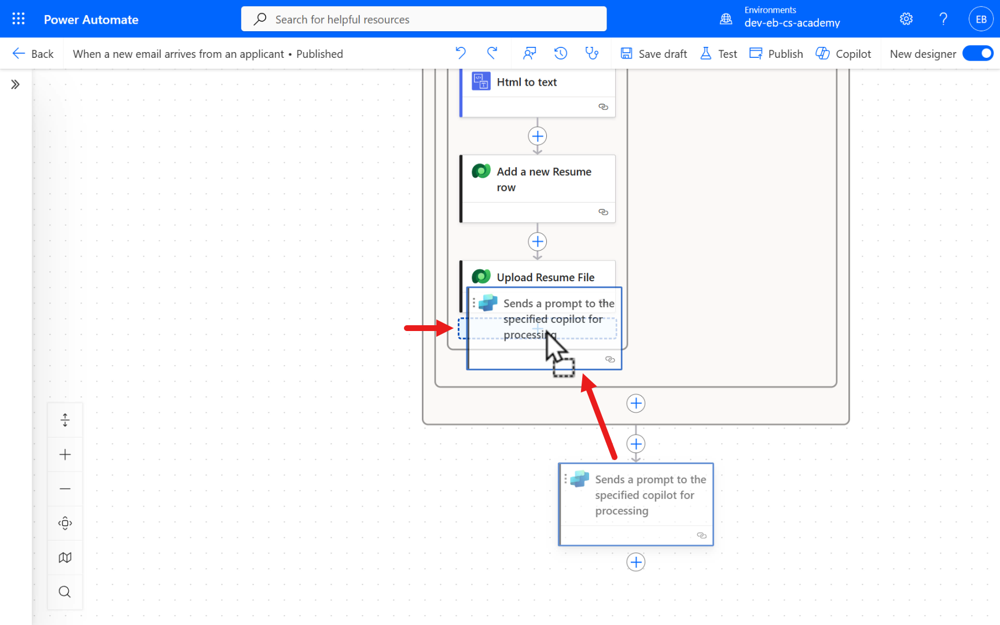
-
Select the Sends a prompt to the specified copilot for processing to configure it.

-
In the Body/message field, select all of the field content and clear/delete it.

-
Copy and paste the following text into the Body/message field and highlight the
RESUME ID PLACEHOLDER.Send [ResumeId (text)] = "RESUME ID PLACEHOLDER" and [ResumeTitle (text_1)] = "RESUME TITLE PLACEHOLDER" and [ResumeNumber (text_2)]= "RESUME NUMBER PLACEHOLDER" to the Tool "Notify Teams Applicant channel" in the child agent "Application Intake Agent"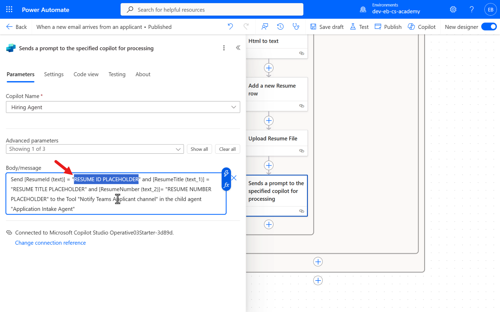
-
Select the lightning bolt icon to the right.
Search for
resumeand select the Resume parameter from the Add a new row Dataverse action as this contains theIDvalue of the Resume row created.Select Add.
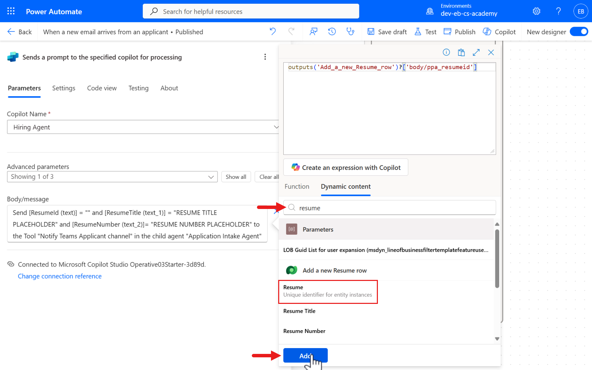
-
Highlight the
RESUME TITLE PLACEHOLDER. Select the lightning bolt icon to the right.Search for
titleand select the Resume Title parameter from the Add a new row Dataverse action as this contains theresume titlevalue of the Resume row created.Select Add.

-
Highlight the
RESUME NUMBER PLACEHOLDER. Select the lightning bolt icon to the right.Search for
resume numberand select the Resume Number parameter from the Add a new row Dataverse action as this contains theResume Numbervalue of the Resume row created.Select Add.

-
We've completed configuring this action and our agent flow 🙌🏻 You're doing great! Now let's save our event trigger flow by selecting Save.

-
We now need to edit the details of the agent flow, select Back.

-
Select Edit in the Details section and update the Plan to the Copilot Studio option.
Select Save.
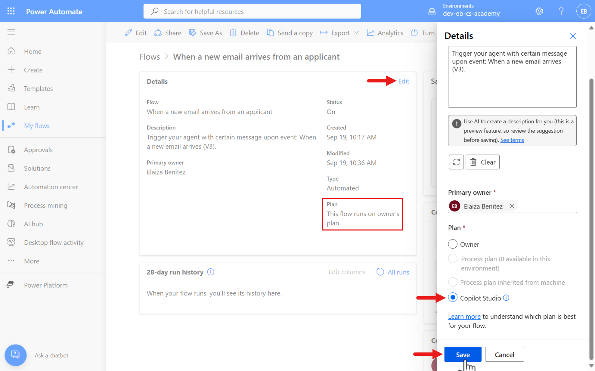
-
A modal will appear to ask you to confirm to switch to Copilot Studio plan. Select Confirm.

-
The plan is now updated to Copilot Studio. Select Edit as we need to publish the event trigger flow for our agent.

-
Select Publish.
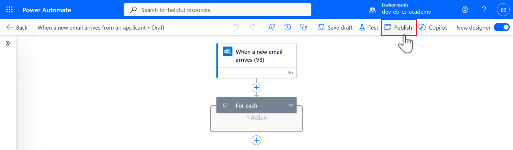
Hooray! The event trigger flow is now Published 😃
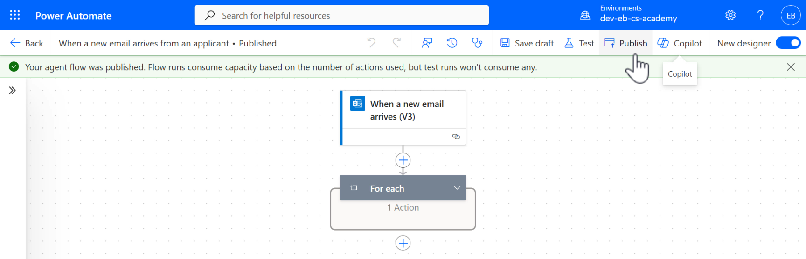
Let's proceed in creating a new agent flow that will be invoked by the child Intake Application Agent.
Lab 4.2 - Notify a Teams channel using an adaptive card¶
We're now going to create a new agent flow for the child Intake Application Agent that uses the values passed by the event trigger, to post an adaptive card to a Teams channel. This adaptive card will alert the HR recruitment team about the PDF that was automatically uploaded so that they can review it.
Let's begin!
-
In the Hiring Agent select the Agents tab and select the Application Intake Agent

-
Scroll down to Tools and select + Add.

-
The Add tool modal will appear. Select + New tool.

-
Select Agent flow.

-
The agent flow designer will next load. In the When an agent calls the flow trigger, select + Add an input.

-
Select Text as the type of user input.
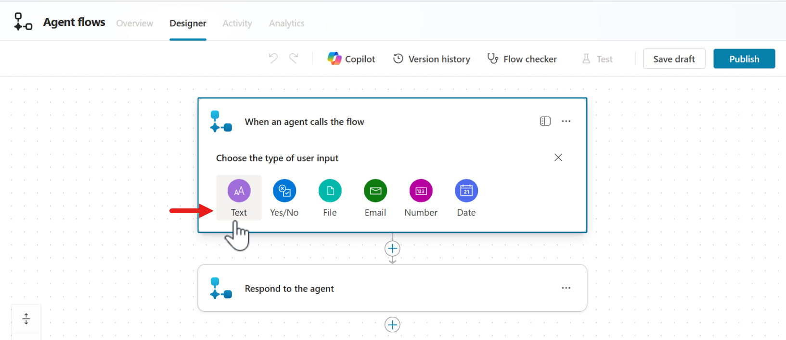
-
In the input text field, copy and paste the following for the input parameter name.

-
Repeat the same steps to add a second text input. Copy and paste the following for the input parameter name.

-
Repeat the same steps to add a third text input. Copy and paste the following for the input parameter name.
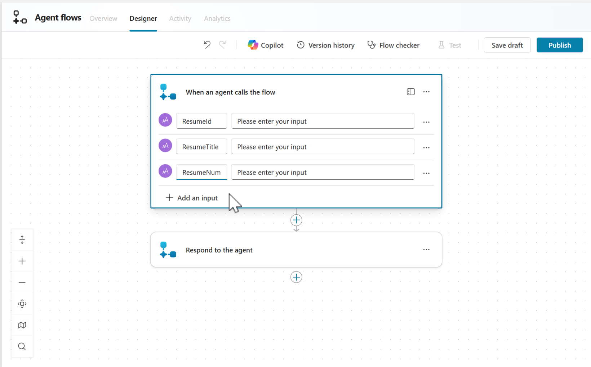 -
Remember how in Recruit we added an adaptive card within a Topic for our agent? This time round, we're going to add an adaptive card in an agent flow. We're now going to add another action to our agent flow that will post an adaptive card to a Teams channel.
Select the + icon below the trigger.

-
Search for Microsoft Teams post and select the Post card in a chat or channel action.

-
A connection reference to Microsoft Teams needs to be created with your signed in user account. Select Sign in.
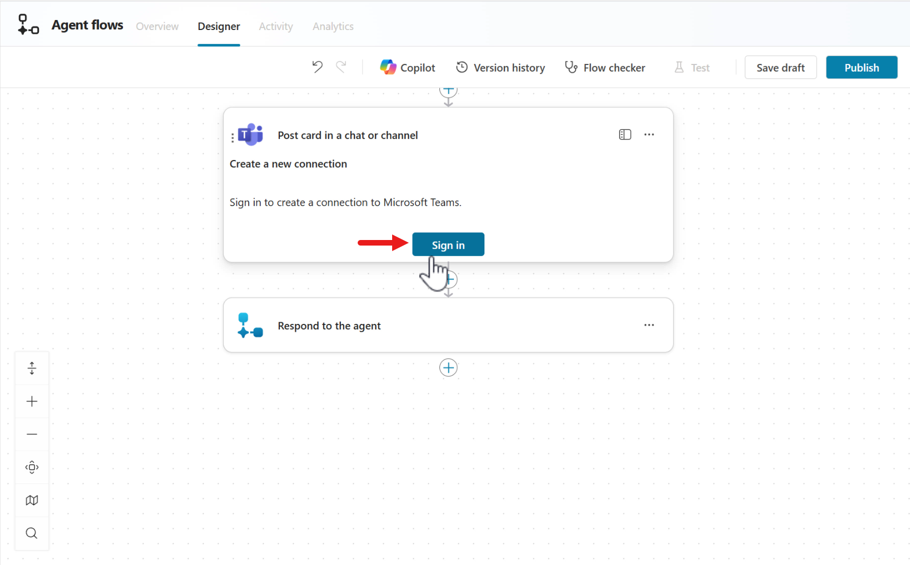
-
Select your user account and then select Allow access.

-
Configure according to the following input parameters:
Parameter How to Set Details Post as Dropdown Select the Flow botoptionPost in Dropdown Select the ChanneloptionTeam Dropdown Select a team that's available in your environment that you have access to for the purpose of completing this lab exercise Team Dropdown Select a channel that's available in your environment that you have access to for the purpose of completing this lab exercise 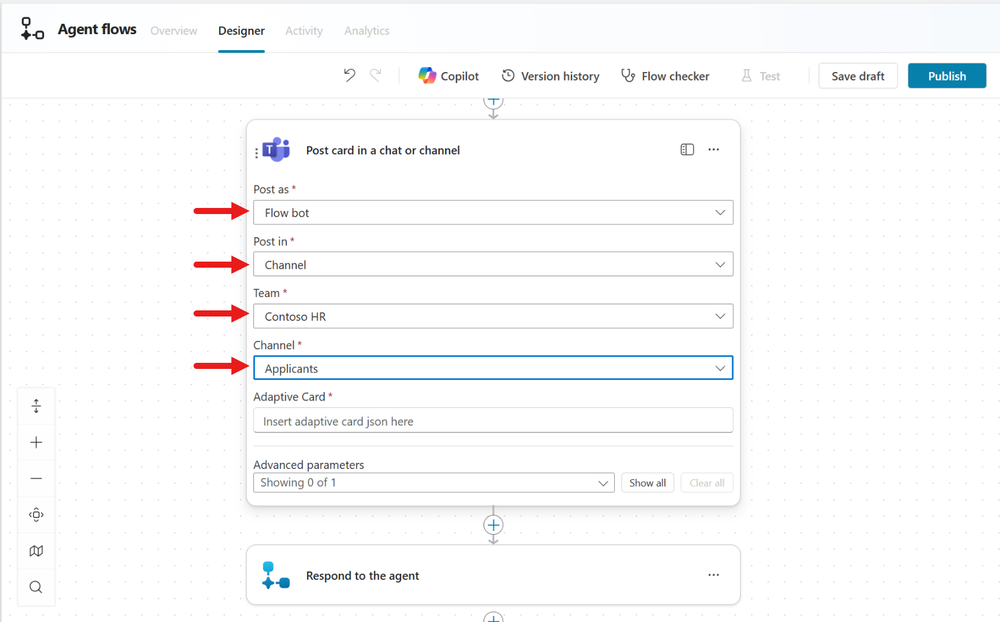
-
Next, we'll configure the Adaptive Card field. Select the Adaptive Card field.

-
Open the Resume Table Updated JSON file, copy its entire contents, and paste them into the Adaptive Card field.

-
Similar to what we did in Recruit, we're going to replace existing values in the JSON payload with actual values or dynamic content.
First, let's update the URL for the
urlproperty within theselectActionproperty. This URL will be replaced with the URL of the Resumes system view in the Hiring Hub model-driven app. This will allow the Recruiter to select the action and be directed to the Resumes system view in the model-driven app.Highlight the current URL value and delete it.
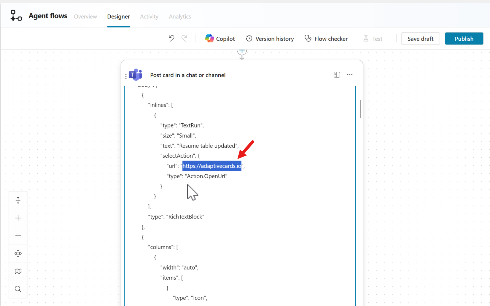
-
In the Hiring Hub model-driven app, navigate to the Resumes system view using the left hand side menu and copy the URL. Then navigate back to the agent flow, and paste the copied URL into the url property of the within the
selectAction property.
-
You should see the following where highlighted in Yellow is your environment details of the Hiring Hub model-driven app.
Parameter Value Explanation Organization URI GUID The Dataverse/Dynamics 365 environment organization URL appid GUID To open a specific model-driven app, the query parameter of either appid or appname is used. In this case, the appid is used viewid GUID The query parameter which is the id of the view 
-
Next, we'll add dynamic content values for several properties. Let's start with the text that will display the Resume Number reference of the row that was created by the event trigger autonomously.
Select the panel icon to load the action panel.

-
Scroll down to the line where you see the
textproperty forRESUME NUMBER PLACEHOLDER. Highlight the placeholder value and delete it.
-
Click in-between the double quotation marks and select the lightning bolt icon or fx icon to the right.
In the Dynamic Content tab select the ResumeNumber parameter and select Add.
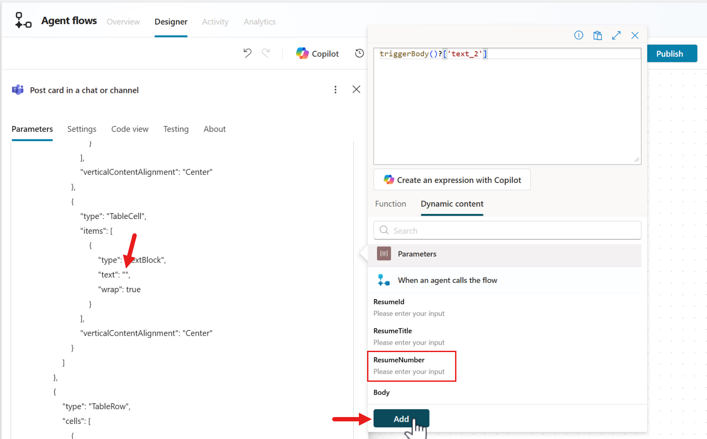
-
The ResumeNumber parameter will now be added as dynamic content to the
textproperty.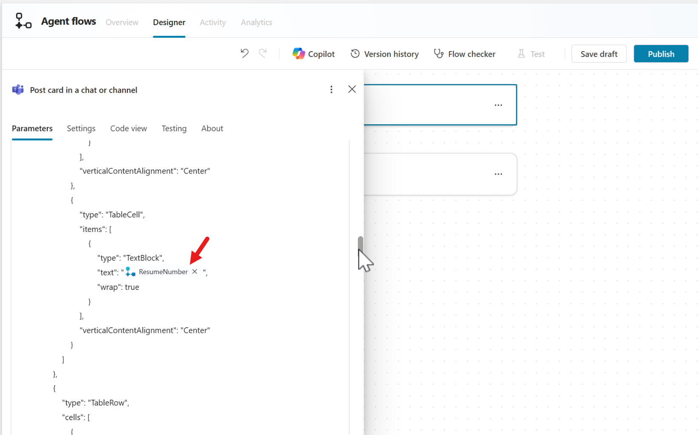
-
We'll repeat the same steps for the
RESUME NAME PLACEHOLDER. Scroll down to the line where you see thetextproperty forRESUME NAME PLACEHOLDER. Highlight the placeholder value and delete it.
-
Click in-between the double quotation marks and select the select the lightning bolt icon or fx icon to the right.
In the Dynamic Content tab select the ResumeTitle parameter and select Add.
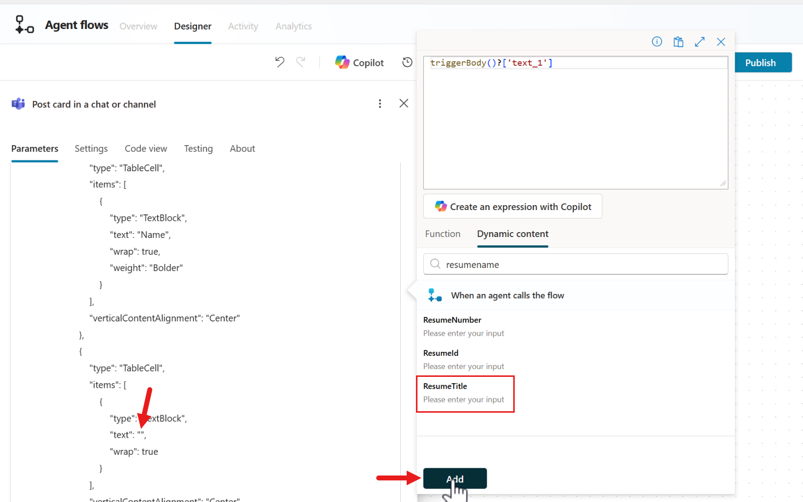
-
The ResumeTitle parameter will now be added as dynamic content to the
textproperty.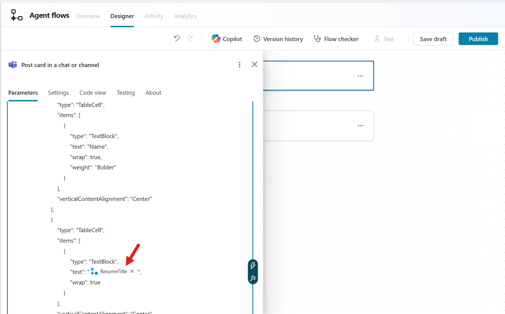
-
We'll repeat the same steps for the Due Date value that represents when a recruiter should review the resume by. Scroll down to the line where you see the
textproperty forMay 21, 2023.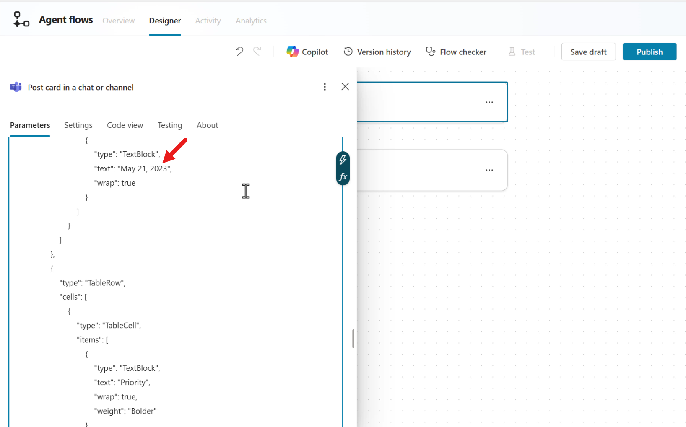
-
Delete this date placeholder value and click in-between the double quotation marks.

-
Select the lightning bolt icon or fx icon to the right and in the Function tab, enter the following expression and select Add.
This expression utilizes two functions.
Function Explanation addDays Adds a specified number of days to a given date and returns the resulting date in string format utcNow Returns the current date and time in Coordinated Universal Time (UTC) format as a string. For the utcNow value, we are formatting the date to be month and date, followed by the year.

The expression will now be added to the
textproperty.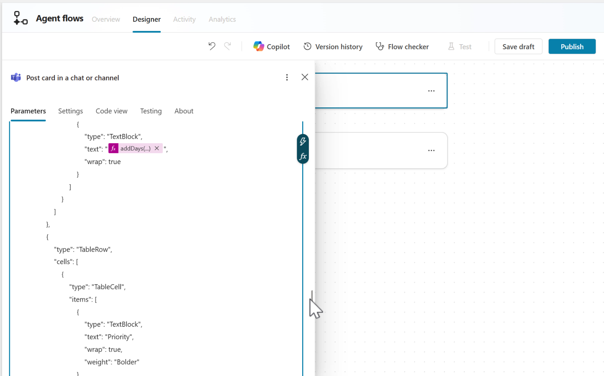
-
Lastly, we'll update the URL for the
urlproperty within theactionsarray property at the bottom of the JSON payload. This current placeholder URL will be replaced with the URL of the Resume row in the Hiring Hub model-driven app. This will allow the Recruiter to select theAction.OpenURLaction of the adaptive card and be directed to the Resume in the model-driven app.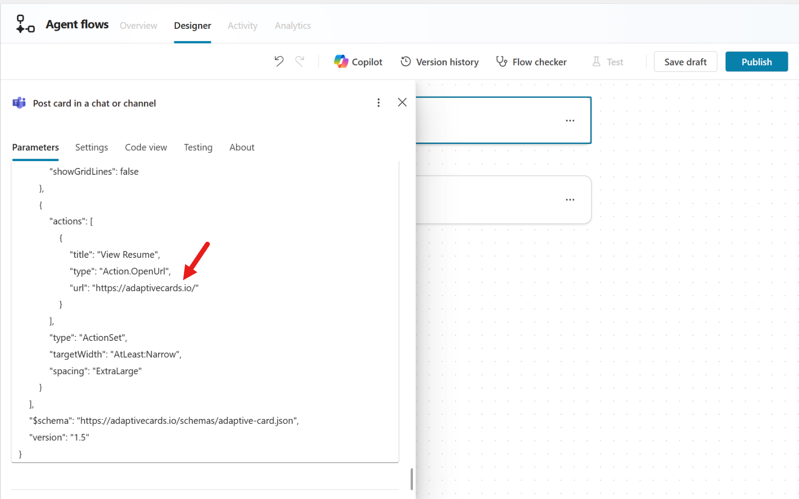
-
In the Hiring Hub model-driven app, open a row in the Resumes system view using the left hand side menu. The resume row will load as a form in the model-driven app.
Copy the URL for the Resume row.
How to navigate back to the Hiring Hub model-driven app in case you exited/closed it
-
Browse to https://make.powerapps.com and make sure you are in your developer environment that you're using for these lab exercises, otherwise switch to it.
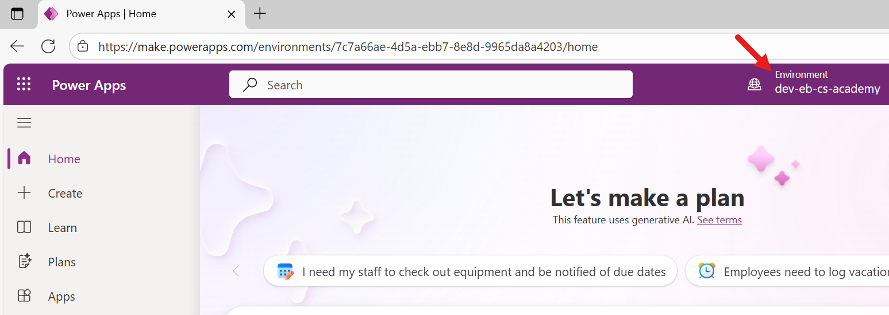
-
Select Apps in the left hand side menu pane and for the Hiring Hub model-driven app, select the Play icon to load it in your browser.
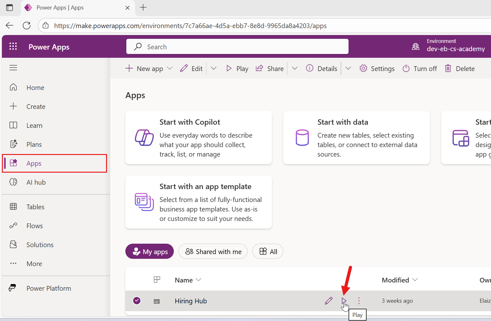

-
-
Then navigate back to the agent flow, highlight the current placeholder URL value and delete it.

-
Then paste the copied URL into the url property of the within the
url property.
-
You should see the following. Delete the
GUIDid value at the end. We'll replace this dynamic content - the ResumeId parameter.
-
Select the lightning bolt icon or fx icon to the right.
In the Dynamic Content tab select the ResumeId parameter and select Add..
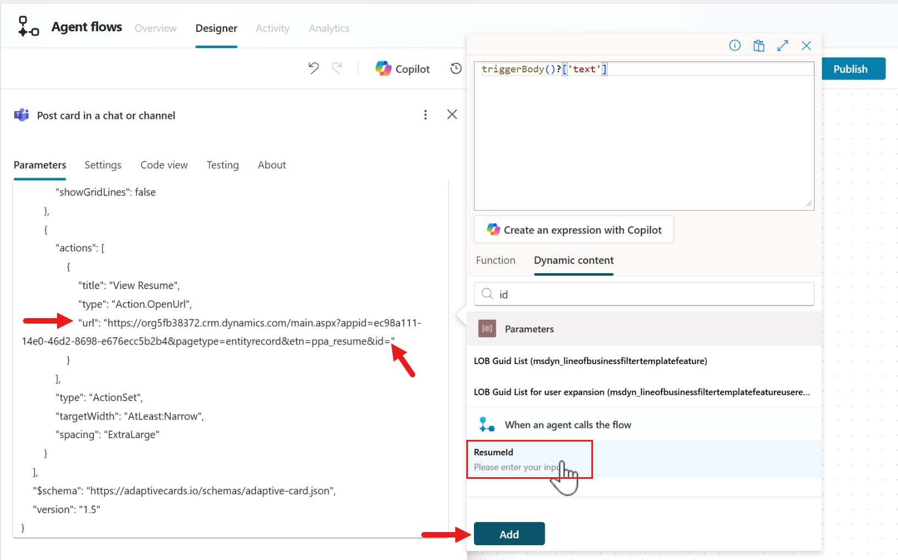
-
The ResumeId will be added as dynamic content. The following highlighted in Yellow is your environment details of the Hiring Hub model-driven app.
Parameter Value Explanation Organization URI GUID The Dataverse/Dynamics 365 environment organization URL appid GUID To open a specific model-driven app, the query parameter of either appid or appname is used. In this case, the appid is used id GUID The query parameter which is the id of the Resume row 
-
We've completed configuring the Post card in a chat or channel action 👏🏻 Exit from the action configuration panel by selecting the x icon.
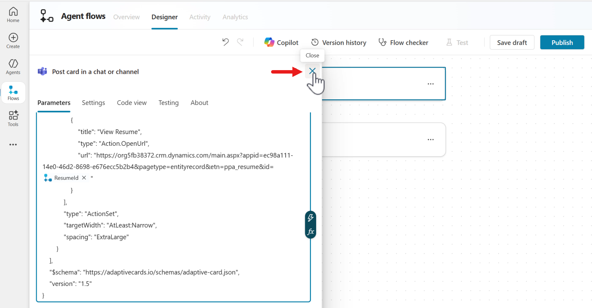
-
Finally, we'll configure the last action, Respond to the agent by sending a text back to the agent to end the processing.
In the Respond to the agent action, select +Add an output.

-
Select Text as the type of output.

-
Enter the following as the following as the name of the output:
EndConversation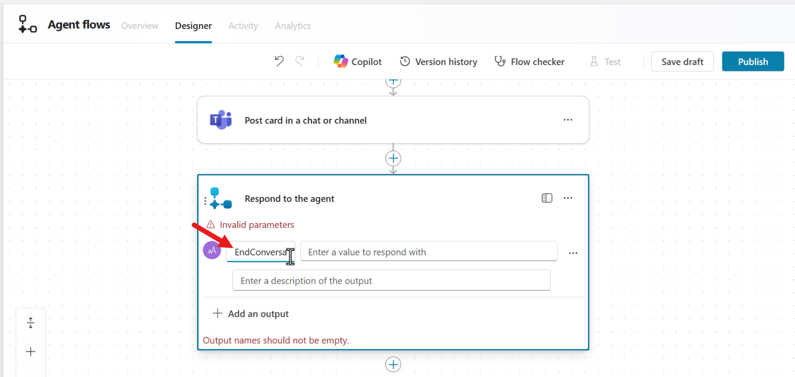
-
Enter the following as the value for the output.

-
We've now completed configuring the agent flow. Select Save draft to save the agent flow. A confirmation message will appear once saved.
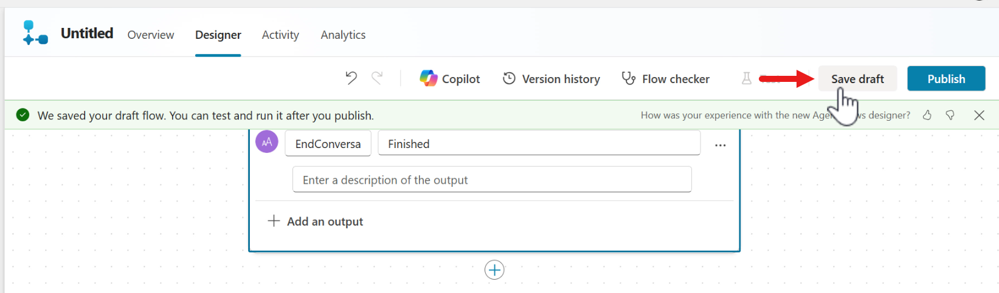
-
Before publishing the agent flow, we need to update the details for the agent flow. Select the Overview tab and select Edit.
In the flow name field, enter the following.
Afterwards, select the Refresh icon to update the description of the agent flow using AI.
Then select Save to save the updated details for the agent flow.
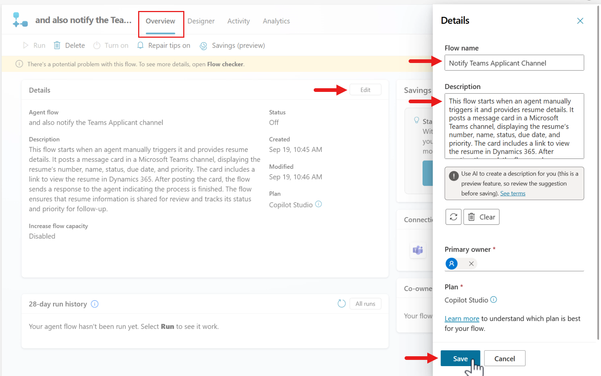
-
Navigate back to the Designer tab and select Publish to publish the agent flow. A confirmation message will appear once saved.

-
The agent flow now needs to be added as a tool in the Application Intake Agent. Navigate back to the Hiring Agent and select the Agents tab, then select the Application Intake Agent.
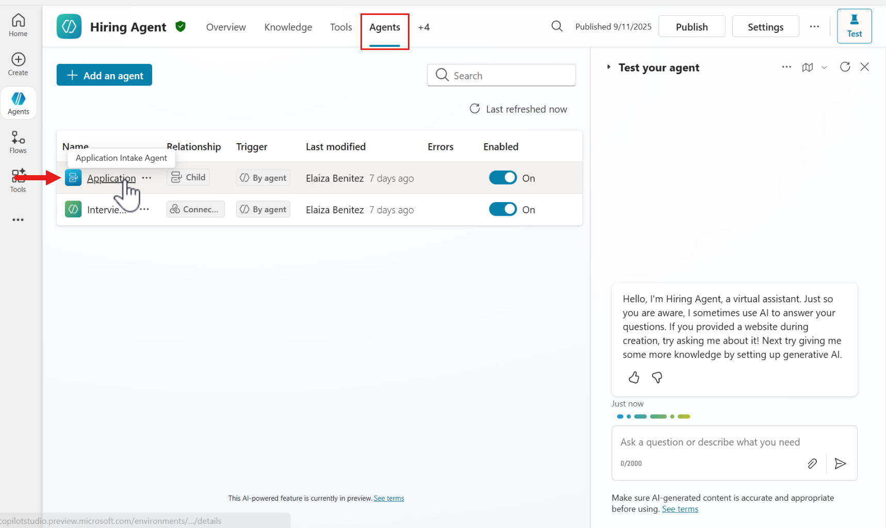
-
In the Details section of the agent, we'll update the Description field. Copy the following and paste and the end of the description text.

-
Next, we'll add the agent flow as a tool. Scroll down to the tools section and select + Add.

-
Select the Flow tab and choose the agent flow created earlier, Notify Teams Applicant Channel.

-
Select Add and configure next.

-
In the Inputs section, the three inputs we configured earlier in the agent flow are visible. By default, the Fill using configuration is set to Dynamically fill with AI. We'll keep this setting as-is as the prompt from the event trigger (in the last action, Sends a prompt to the specified copilot for processing - this is steps 38 - 44 of Lab 4.1 - Automate uploading resumes to Dataverse received by email) will contain the parameter values that AI will extract.

-
Now that the tool has been added to the Application Intake Agent, the instructions of the agent needs to be updated. Select the back arrow icon to return to the list of agents.

-
Select the Application Intake Agent in the Agents tab of the Hiring Agent.
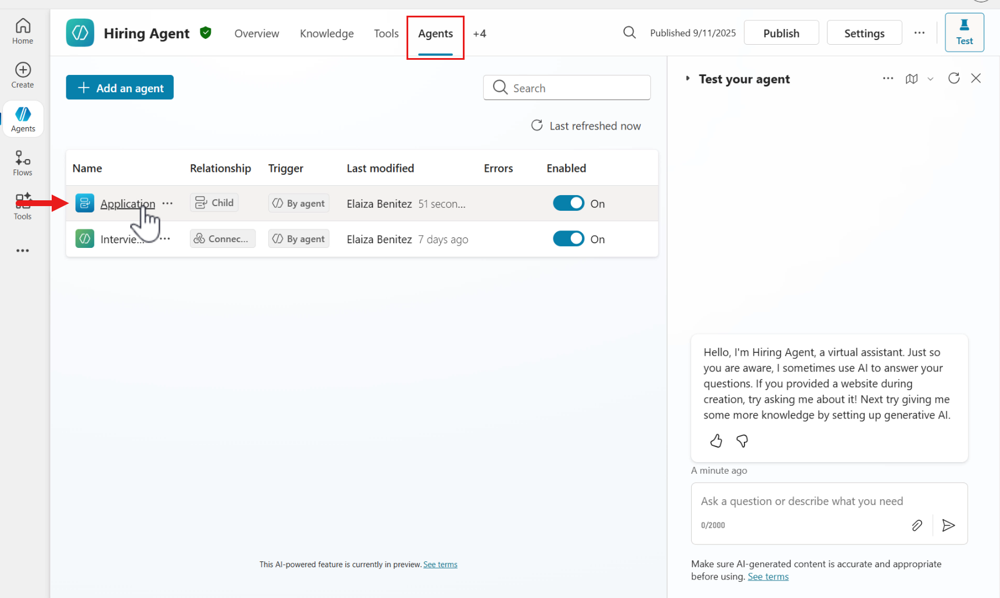
-
In the Instructions field, enter a new line after
2.Post-Uploadinstructions. Copy and paste the following instructions.Process for Resume Upload via Email 1. When you receive a message, **Send [ResumeId (text)] = "1680265f-5793-f011-b41b-7c1e525be9f7" and [ResumeTitle (text_1)] = "TAYLOR TESTPERSON (FICTITIOUS).pdf" and [ResumeNumber (text_2)]= "R01026" to the Tool "Notify Teams Applicant channel"** in the child agent "Application Intake Agent", call [AGENT FLOW PLACEHOLDER]
-
Highlight the
[AGENT FLOW PLACEHOLDERtext.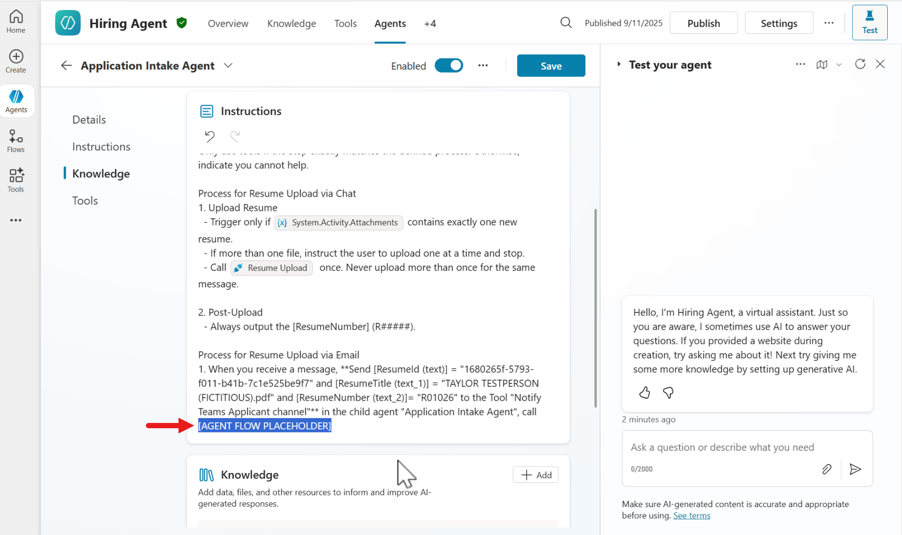
-
Enter the forward slash character,
/, and select the Notify Teams Applicant Channel tool.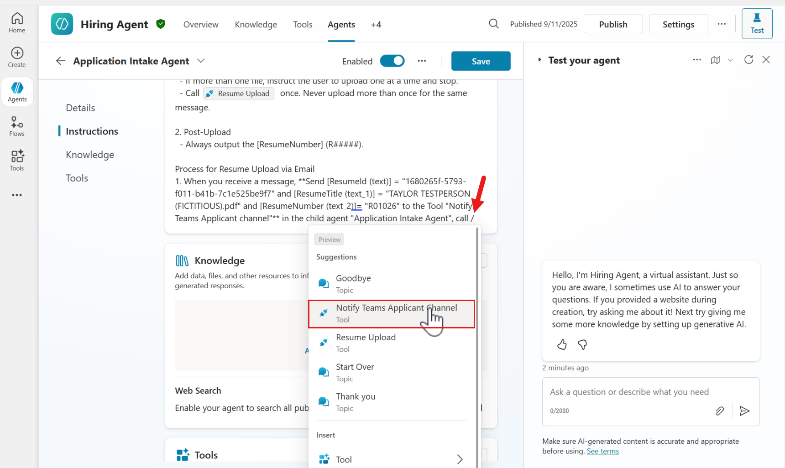
-
The agent flow will now be invoked by the Application Intake Agent as per the instructions, after the last action (Sends a prompt to the specified copilot for processing) in the event trigger sends the prompt that contains the parameter values back to the agent.
Select Save to save the updated instructions for the Application Intake Agent.

-
The instructions will now be updated once the agent has been saved.

-
We now need to Publish the Hiring Agent. Select Publish on the upper right, and in the Publish this agent modal that appears select Publish.

-
Once published, a confirmation message will appear that the agent has been published.
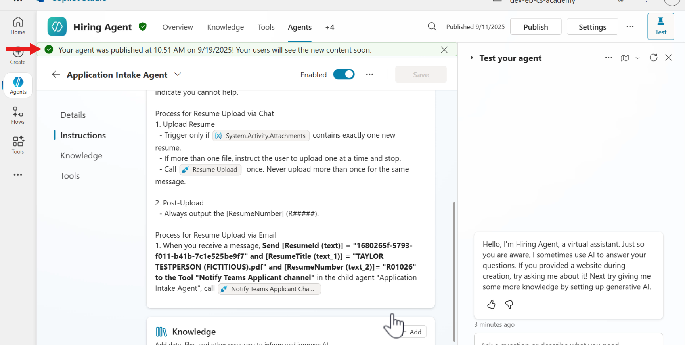
We can now test the agent!
Lab 4.3 - Test event trigger¶
-
To execute the event trigger, an email needs to be sent with a Resume pdf file. In Outlook, compose a new email message.
Email Component Details To recipient Use your signed in user account as the value File attachment Upload the TAYLOR TESTPERSON (FICTITIOUS) file Subject Job Application Body Copy and paste the following below as the body of the email Dear Hiring Manager, I am writing to express my interest in the Senior Power Platform Engineer position at your organization. With over nine years of experience delivering secure and scalable solutions on Microsoft cloud platforms, I am confident in my ability to contribute effectively to your team. In my most recent role as Lead Power Platform Engineer, I developed an automated resume-intake pipeline, reducing manual triage and improving searchability. I have delivered HR case management applications, introduced solution-aware flows, and implemented PR checks to enhance deployment lead times. My expertise includes Power Apps, Power Automate, Power Pages, Dataverse, and a range of Microsoft 365 services, as well as integration with Graph/REST APIs and Azure Functions. Previously, I developed Teams approvals with adaptive cards, cutting approval times to the same day, and created robust error-handling frameworks. My background also includes migrating legacy workflows to Power Automate and building self-service portals adopted by hundreds of employees. I hold a B.Sc. in Computer Science and am certified as a Power Platform Developer (PL-400) and Solution Architect (PL-600). I am also passionate about mentoring and have volunteered with local maker groups. Please find my CV attached for your consideration. I would welcome the opportunity to discuss how my skills and experience align with your needs. Thank you for your time and consideration. Kind regards, Taylor TestpersonSend the email once composed.
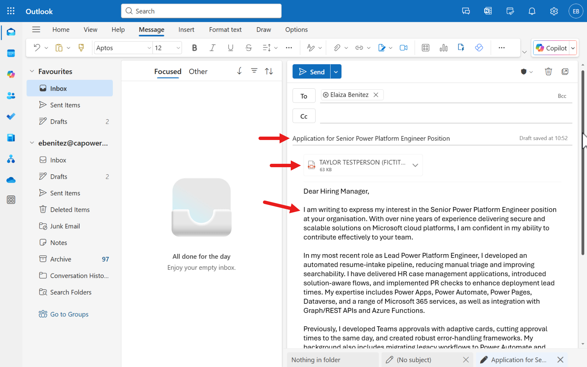
-
In the Power Automate maker portal for the event trigger flow, select the Refresh icon to view the flow run that succeeded for the sent email.

-
Back in Copilot Studio in the Hiring Agent select the Activity tab.
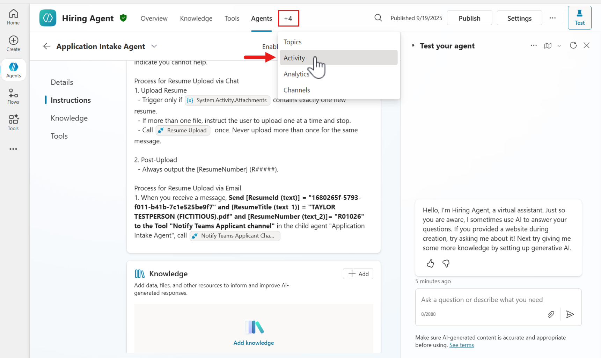
-
The Activity tab will load which will display all the activities of the Hiring Agent. There will be an activity with the name value of Automated that has a status of Complete. This activity represents the event trigger and the agent flow that was invoked.
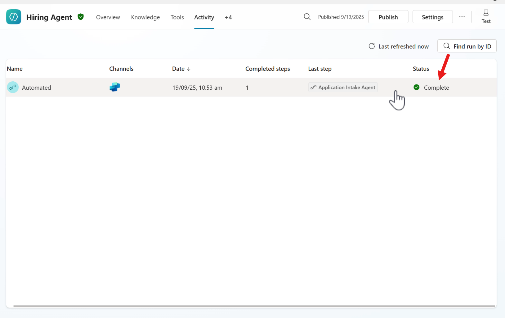
-
Select the activity, and select the event trigger in the activity map. On the right hand side panel, notice how the input parameters in the prompt contain the
Resume Id,Resume TitleandResume Numberparameter values from the Dataverse row that was created. This was from the dynamic content values configured earlier in steps 38 - 44 of Lab 4.1 - Automate uploading resumes to Dataverse received by email.
-
Navigate back to the Hiring Hub model-driven app and in the Resumes system view, select Refresh to refresh the view. The newly created row for the resume that was sent by email will now be listed as it was created through the event trigger.

-
Navigate back to Copilot Studio and select the Notify Teams Applicant Channel agent flow within the Application Intake Agent in the activity map. On the right hand side panel, notice how the inputs have values from the Dataverse row. This was from the prompt sent by the last action (Sends a prompt to the specified copilot for processing) in the event trigger that contains the parameter values from the newly created Dataverse row. This is how we can pass parameter values from event triggers to agent flows.

-
Finally, let's take a look at the adaptive card posted to the channel in Microsoft Teams. In the channel, we'll see the adaptive card that displays the information about the newly created Resume row in Dataverse. Hover over the hyperlink at the start of the adaptive card, notice how the URL is the Resumes system view URL that we configured earlier in the JSON (steps 15 - 19 of Lab 4.2 - Notify a Teams channel using an adaptive card) payload of the adaptive card.

-
Select the hyperlink, and you'll be directed to the Resumes system view in the Hiring Hub model-driven app on your browser.
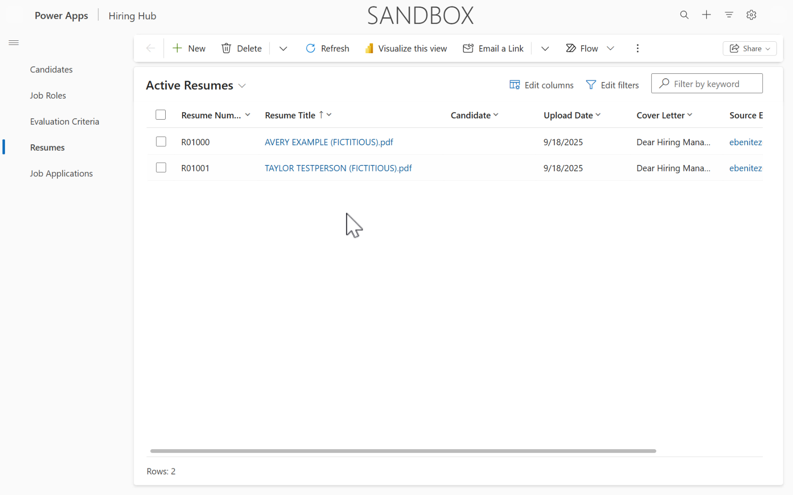
-
Navigate back to the adaptive card posted to the channel in Microsoft Teams. This time, hover over View Resume which is the
Action.OpenURLaction of the adaptive card. Notice how the URL is the Resumes row that we configured earlier in the JSON (steps 30 - 36 of Lab 4.2 - Notify a Teams channel using an adaptive card) payload of the adaptive card.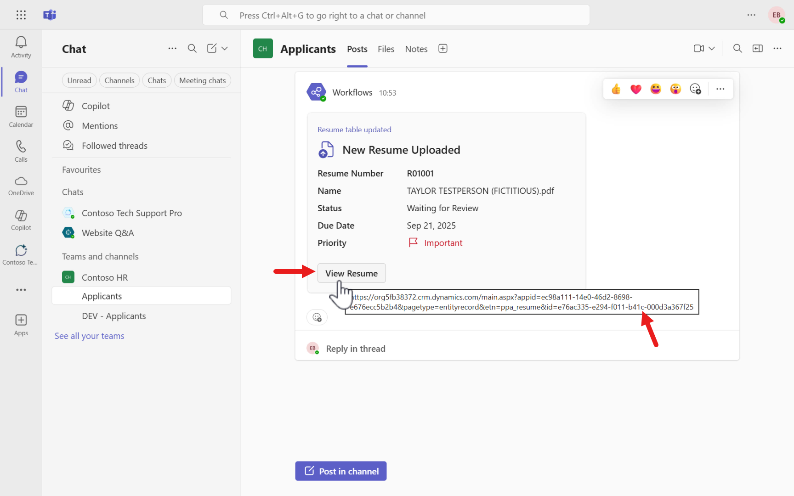
-
Select the action, and you'll be directed to the Resume row form in the Hiring Hub model-driven app on your browser.
✅ Mission Complete¶
Congratulations! 👏🏻 Excellent work, Operative.
✅ Event trigger: you've created an event trigger that passes Dataverse parameter values to an agent flow. ✅ Built an agent flow: consumes the Dataverse parameter values to post an adaptive card to a channel in Microsoft Teams to alert the HR recruitment team. ✅ Updated child agent instructions: to invoke the flow once the event trigger has completed.
This enables the Hiring Agent to work autonomously whenever resumes are received as email attachments and notify the HR recruitment team for manual review.
This is the end of Lab 04 - Automating candidate application emails, select the link below to move to the next lesson.
⏭️ Move to Understanding Agent Models lesson
📚 Tactical Resources¶
📖 Make your agent autonomous in Copilot Studio
📖 Use agent flows with your agent
📖 Power Automate triggers introduction